9. Chamfers and fillets¶
In this tutorial we are going to learn how to make chamfers and rounding on the edges of the pieces created with FreeCAD.
Open the FreeCAD application and click on the icon to create a new document
 .
.We select the Part workbench to start designing objects in 3 dimensions.
At this point we are going to add the reference axes to help us place the pieces correctly.
In the menu
View... Activate or deactivate the cross of the axes.
Now we create a cube by clicking the first icon on the solid object bar.

We select to see the piece in isometric view.

The piece will look like the following image.
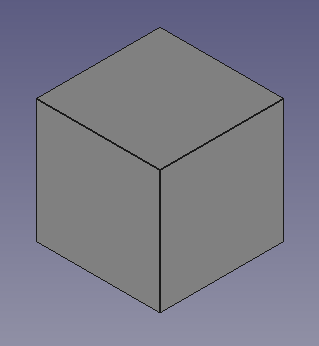Once the cube is created, you have to select the upper edges by clicking on them while keeping the Control key pressed.
The selected edges will turn green.
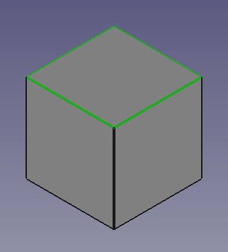In this image, the value of Line Width has been changed to value 4, in the View tab, so that it can be viewed better.
Once the edges are selected, we are going to make the chamfer with the Create chamfer for the selected edge tool
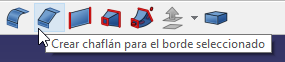A work window will appear like the following image.
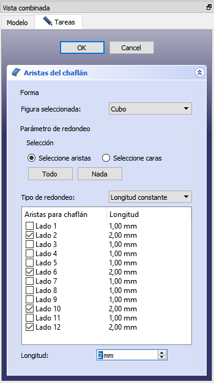In this work window we can select the sides (Edges) that we want to chamfer and the length of the chamfer, which we are going to change to 2 millimeters.
Finally we click OK to finish the chamfer.
The piece will look like the following figure.
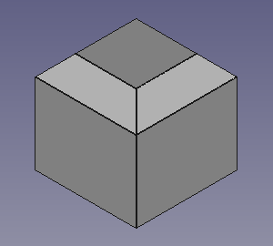We can perform the same operation with another cube, but this time we will use the Round Edges tool.
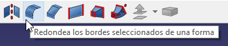So the new cube will have rounded edges, instead of straight cuts from the chamfering.
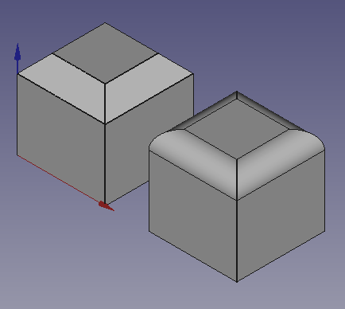
Exercises¶
Make a chocolate tablet like the one in the figure.
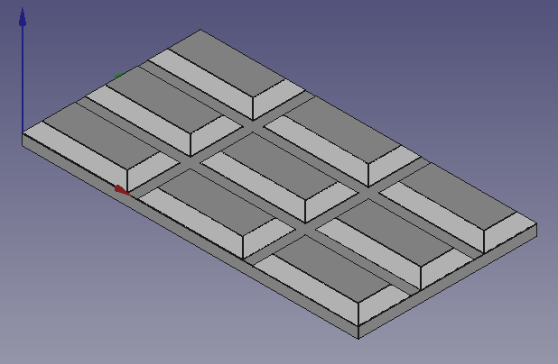First we will create a cube and give it the following dimensions.
Length (Length) = 20
Width = 10
Height = 2
Next we'll create a 1.9mm chamfer on the top four sides.
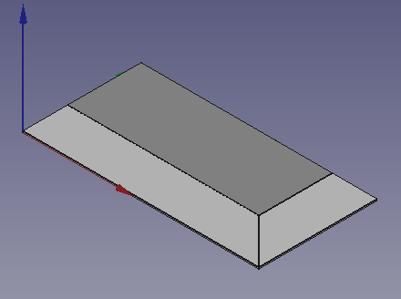We will copy the new part and paste it
Edit... Paste.eight times in total.We will move all the pieces so that they are 2 millimeters away from each other.
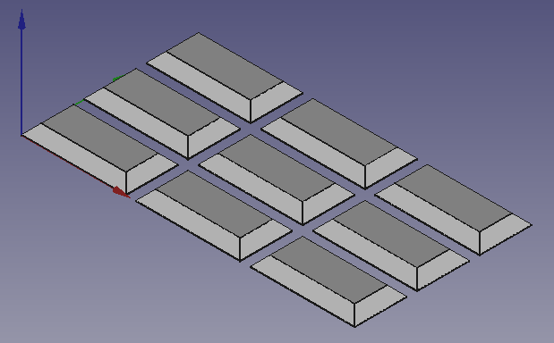Now we will create a new cube and give it the following dimensions.
Length (Length) = 64
Width = 34
Height = 2
We will move this last cube 2 millimeters down.
Finally we select all the pieces and merge them into a single object Menu
Piece... Boolean... Union..Make the piece of the figure from cylinders and a cube.
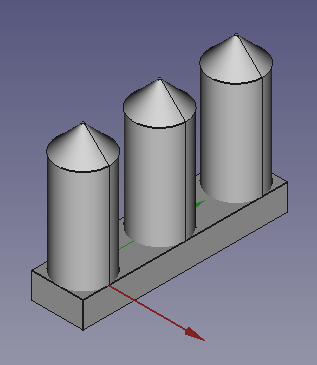All three cylinders are the standard size, with a 1.9-millimeter top chamfer.
The cube is resized and positioned according to the values of the image.
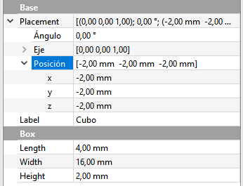Make the piece in the figure from a chamfered cylinder.
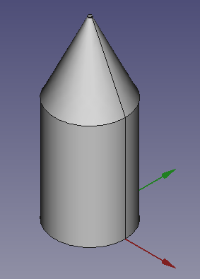The chamfer must be of variable length, as shown in the following figure.
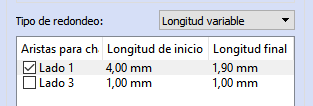